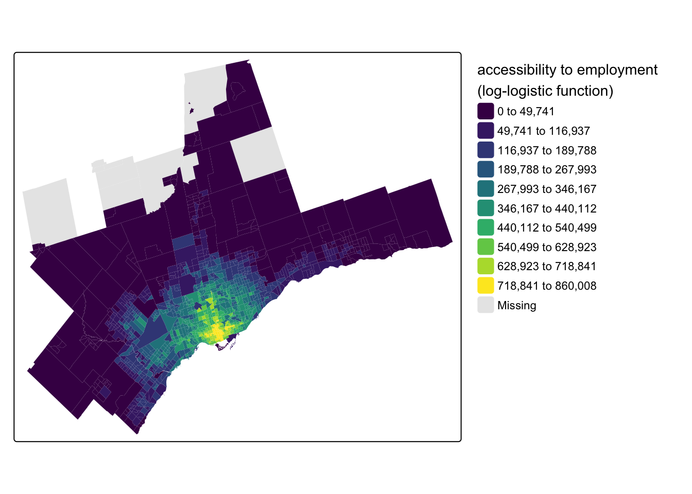

![]()
options(java.parameters = "-Xmx8G")Over this past academic year, we were honoured to host Dr. Rafael Pereira as a Bousfield Distinguished Visiting Professor in the Department of Geography and Planning. Rafa earned his PhD at Oxford and has published dozens of great academic papers. He is also the lead of the data science team at the Institute for Applied Economic Research (Ipea) which has published the {r5r} package that enables rapid realistic routing on multimodal transport networks by connecting R with the open source R5 Routing Engine from Conveyal. Beyond his Bousfield Lecture on Advancing Urban Accessibility for Inclusive Cities, he also led a crash-course workshop on Urban Accessibility with R where students and practitioners in attendance got some hands-on experience using R for accessibility analysis with some data for Brazil.
Between the workshop, my teaching of courses like GGRC30 Advanced GIS and JPG1400 Advanced Quantitative Methods where students are increasingly conducting accessibility analyses and often needing some guidance, and the joking by Steven Farber that I should be local tech support for {r5r}, I’ve put together a collection of the first steps I undertake in nearly every analysis of accessibility in the City of Toronto and larger region. Together, these serve as a nice little introductory vignette to the topic in the local context.
What is Accessibility?
To jump right into the topic, transportation accessibility reflects the ease with which individuals can reach destinations using the transportation network. There are many different types of accessibility measures (see Geurs and Wee (2004)’s review of the infrastructure-, place-, person- and utility-based approaches or Wu and Levinson (2020)’s Unifying Access paper). This post focuses on place-based accessibility - the potential to reach destinations from an origin place using the transportation network. To keep this post manageable, I am assuming some general knowledge of place-based accessibility and how {r5r} works. If you need a refresher, see the Introduction to Urban Accessibility book by Rafa and his Ipea team. Of my own work, see Higgins et al. (2022) and Higgins (2019).
But briefly, a place-based accessibility measure takes the general form:
\[ A_i = \sum_{j=1}^J O_j \times f(t_{ij}) \]
where the accessibility for place \(i\), typically represented by a polygon, is the sum of opportunities \(O\) at the destinations \(j\) weighted by some function \(f\) of the travel time required to reach them (\(t_{ij}\)). Place-based measures often utilize a cumulative (e.g. a 45-min travel time cut-off) or gravity-type (continuously declining) impedance function to account for the fact that there are costs associated with travel that make destinations farther away generally less desirable.
Accessibility analyses have a lot of uses, and even Statistics Canada has conducted some across the country through their Spatial Access Measures database. But assuming you want to do this yourself, let’s jump into how we can get set up for calculating accessibility in the Toronto region.
Setup
Because the {r5r} package uses Java, the first thing we have to do is allocate some memory for Java to operate in. Here I will allocate 8gb of memory, which should be enough for R5 to work with a network for the region:
Next, load the packages we need
# tidyverse
library(tidyverse)
library(fs)
library(janitor)
# spatial
library(sf)
library(tmap)
# data and analysis
library(cancensus)
library(osmextract)
library(TTS2016R)
library(calendR)
# routing and transit
library(r5r)
library(accessibility)
library(tidytransit)Finally, we will set up file path helpers to point to where we will keep our cache, R5 network graph, and travel time matrix:
cache_path <- fs::dir_create("./cache")
r5_graph_path <- fs::dir_create("./r5_graph")
ttm_path <- fs::dir_create("./ttm")Data Collection
Origin Places
Place-based measures of access require information on the locations of the origin places \(i\). One popular option for origin and destination places is Census zones, such as Dissemination Areas (DAs) or Census Tracts (CTs). These can be obtained using the great {cancensus} package. Please see the vignettes from the package documentation to learn more about getting a free API key, finding census datasets, regions, and vectors. First, we need to provide an API key:
set_cancensus_api_key("<your API key>", install = TRUE)I will also set the cache directory for this project to avoid multiple downloads:
set_cancensus_cache_path(cache_path)./cacheWith this set, we can now get some data for CTs for the Toronto and Oshawa CMAs that traditionally make up the Greater Toronto Area:
census_data_ct <- get_census(
dataset = 'CA16',
regions = list(CMA = c("35532", "35535")),
level = 'CT',
geo_format = "sf",
use_cache = TRUE) |>
janitor::clean_names() |>
st_transform(crs = 26918) |>
mutate(population_density = population / shape_area)- 1
- Use the 2016 Census
- 2
- Specify CMAs as the province code for Ontario (“35”) and the CMA codes for Oshawa (“532”) and Toronto (“535”)
- 3
- Get Census Tracts
- 4
- Tell {cancensus} we want the CT geometries in {sf} format
- 5
- Often Census data comes with capital letters and spaces in the names, so use {janitor} to clean the names up
- 6
-
Transform the {sf} geometries to the NAD 1983 Zone 17n projection for the region (EPSG code
26917) - 7
- Mutate a population density (in people per \(km^2\)) column
Let’s see what this data looks like by mapping our population_density variable using {tmap}:
Code
tm_shape(census_data_ct) +
tm_fill(
fill = "population_density",
fill.scale = tm_scale_intervals(
n = 10,
style = "jenks",
values = "viridis"
),
fill.legend = tm_legend(
title = "population density \n(people per km\U00B2)",
frame = FALSE
)
)- 1
-
tell {tmap} we want to map the
population_densityvariable - 2
- use an interval-based classification scheme
- 3
- with 10 breaks in the distribution
- 4
- use the Jenks algorithm to set values for the 10 breaks
- 5
- use the viridis colour scheme
- 6
-
set the legend title, including a line break using
\nand the unicode character\U00B2for a superscript of 2 - 7
- turn off the legend frame
Within the Toronto region, another option for origin and destination places is the traffic analysis zones (TAZs) associated with the Transportation Tomorrow Survey (TTS). This survey covers the larger Greater Golden Horseshoe area with zones roughly similar in size to CTs. A recent package called {TTS2016R} has gathered these zones for easy use in R, and I will filter them down to just the zones in the Toronto and Oshawa CMAs:
tts_tazs <- TTS2016R::ggh_taz |>
janitor::clean_names() |>
sf::st_transform(crs = 26917) |>
filter(cmauid %in% c("532", "535")) |>
mutate(
workers_density = workers / area,
jobs_density = jobs / area)This survey covers the larger Greater Golden Horseshoe area with zones roughly similar in size to CTs and the {TTS2016R} package focuses on worker and job counts. Here’s a map of the density of the working population:
Code
tm_shape(tts_tazs) +
tm_fill(
fill = "workers_density",
fill.scale = tm_scale_intervals(
n = 10, #
style = "jenks",
values = "viridis"
),
fill.legend = tm_legend(
title = "worker density \n(people per km\U00B2)",
frame = FALSE
)
)Destination Opportunities
We also need some destination places \(j\), as well as some representation of the opportunities \(O\) at the destinations. There are many different types of destination opportunities that can be considered for accessibility analysis. A popular option is employment counts at the destination zones. This data can be a bit hard to track down, but it is available for DAs from the 2016 Census via a custom extract of the Employed Labour Force by Place of Work hosted on Borealis here. This data comes as an Excel spreadsheet and will require some prep outside of R.
The TTS also captures employment counts at the destination TAZs and the survey data is available now for 2022 via the Data Management Group. Helpfully, the {TTS2016R} package offers job counts from the 2016 TTS at the TAZ level - here’s a map of employment counts for the TAZs that make up the Toronto and Oshawa CMAs:
Code
tm_shape(tts_tazs) +
tm_fill(
fill = "jobs",
fill.scale = tm_scale_intervals(
n = 10, #
style = "jenks",
values = "viridis"
),
fill.legend = tm_legend(
title = "employment count",
frame = FALSE
)
)Beyond employment counts, other popular destinations include point of interest (POI) data for things like hospitals, grocery stores, etc. Often in these cases, the “opportunity” weight for a POI will be equal to one so that the accessibility analysis counts the number of a given POI type accessible from an origin place. One source for this for University students is DMTI’s Enhanced Points of Interest database, which can be found on the Scholar’s GeoPortal after logging-in with your university credentials. This database can be filtered by the North American Industry Classification System (NAICS) codes for the POIs. We used the DMTI data in Yu and Higgins (2024).
Alternatively, POI data collected from sources like Microsoft and Meta is also now available as an open data product through Overture Maps and can accessed via new R packages such as the {overtureR} package. Other POIs like parks and schools can be found from municipal (e.g. Toronto), provincial (Ontario), and federal open data portals. For example, Statistics Canada has been collecting a range of open data products through their Linkable Open Data Environment project.
OpenStreetMap File
With the origin places and destination opportunities collected, next you need the core components that R5 and {r5r} need to create a routable network. The first of these is a street network from OpenStreetMap (OSM). The way I do this is through the {osmextract} package, which allows you to search by a place name. Pre-defined OSM extracts can be found for major places around the world. These are great because they are relatively small and won’t cause an error associated with the maximum study area size of 975,000 \(km^2\) in R5. Outside of R, you can also find metro area extracts from Interline (API key required).
However, if a place extract does not exist, you might have to move up to the next level of geography, which, in the Canadian case, could entail downloading gigabytes of OSM data for an entire province. This is a much trickier situation and requires the use of tools like {rosmosis} (the easier but slower tool, see here) or {rosmium} (the faster but harder to install and use tool, see here) to clip the OSM network to a bounding box in R.
In the Toronto case, there are two good extract options. The first is a ~70mb extract for the GTA available from “bbbike”, but it really only covers the City of Toronto.
osmextract::oe_match("Toronto")No exact match found for place = Toronto and provider = geofabrik. Best match is Morocco.
Checking the other providers.An exact string match was found using provider = bbbike.$url
[1] "https://download.bbbike.org/osm/bbbike/Toronto/Toronto.osm.pbf"
$file_size
[1] 72915302For working in the GTA and/or to include cities like Hamilton, Waterloo, etc., there is also a great extract for the “Golden Horseshoe” available from “openstreetmap_fr”:
osmextract::oe_match("Golden Horseshoe")No exact match found for place = Golden Horseshoe and provider = geofabrik. Best match is Centro-Oeste.
Checking the other providers.An exact string match was found using provider = openstreetmap_fr.$url
[1] "http://download.openstreetmap.fr/extracts/north-america/canada/ontario/golden_horseshoe-latest.osm.pbf"
$file_size
[1] 156983172Let’s download the OSM extract for the Golden Horseshoe to our r5_graph_path by providing the “openstreetmap_fr” URL to the oe_download() function:
osmextract::oe_download(
file_url = "http://download.openstreetmap.fr/extracts/north-america/canada/ontario/golden_horseshoe-latest.osm.pbf",
provider = "openstreetmap_fr",
download_directory = r5_graph_path
)We can read in the lines layer of this OSM .pbf file as a simple features {sf} object using oe_read(), which translates the .pbf into a geopackage (.gpkg) in our r5_graph_path folder:
osm_lines_sf <- osmextract::oe_read(
file_path = fs::path(r5_graph_path, "openstreetmap_fr_golden_horseshoe-latest.osm.pbf"),
layer = "lines")The corresponding gpkg file was already detected. Skip vectortranslate operations.Reading layer `lines' from data source
`/Users/chris/Library/CloudStorage/OneDrive-UniversityofToronto/GitHub/higgicd.github.io/posts/accessibility_analysis/r5_graph/openstreetmap_fr_golden_horseshoe-latest.gpkg'
using driver `GPKG'
Simple feature collection with 939997 features and 10 fields
Geometry type: LINESTRING
Dimension: XY
Bounding box: xmin: -82.36947 ymin: 42.51469 xmax: -76.16424 ymax: 44.98971
Geodetic CRS: WGS 84When plotting the major roadways on the map, we can see that this extract covers this part of Southern Ontario:
Code
tm_shape(osm_lines_sf |>
filter(highway %in% c("motorway", "primary", "secondary"))) +
tm_lines(
col = "highway",
col.scale = tm_scale_categorical(values = "plasma"),
col.legend = tm_legend(
title = "street type",
frame = FALSE
)
)GTFS Data
The second key input is General Transit Feed Specification (GTFS) static schedule files to enable transit routing. These can be found from a variety of sources, including municipal or agency open data portals. However, these are often only the most current schedule files. To better align with our 2016 place data, we can download GTFS files from other archival sources including:
- transitfeeds which is great for historical data but is no longer current
- mobility database which is replacing transitfeeds (I have not used yet)
- transit.land a newer source, but it does require an API key to download historical files (free for hobbyist and academic use, see bottom of the pricing page)
- gtfs exchange was one of the earliest archives, you could still try to access it through the Internet Archive
For Toronto, the fragmentation of the region means there are a number of different transit providers (if you think Toronto is annoying, see Montreal!). This makes things tricky in that first you have to track them all down (the browse by region in transitfeeds and transit.land is good for this) but also - and this is critical - they have to all have some service calendar days that align with each other.
In the Toronto case, you can reliably get GTFS feeds for the major providers across the region back to about fall 2016 from transitfeeds, and I have collected the download URLs for feeds around September 2016 into this named list:
gtfs_list <- list(
"brampton" = "https://transitfeeds.com/p/brampton-transit/35/20160818/download",
"burlington" = "https://transitfeeds.com/p/burlington-transit/294/20160906/download",
"durham" = "https://transitfeeds.com/p/durham-region-transit/642/20160824/download",
"go" = "https://transitfeeds.com/p/go-transit/32/20160906/download",
"mississauga" = "https://transitfeeds.com/p/miway/641/20160907/download",
"oakville" = "https://transitfeeds.com/p/oakville-transit/615/20160901/download",
"toronto" = "https://transitfeeds.com/p/ttc/33/20160829/download",
"york" = "https://transitfeeds.com/p/york-regional-transit/34/20160904/download"
)Next, I will pass this list to an iwalk() function from {purrr} for iteration with an index. The function iterates the req_perform() function for downloading files from the {httr} package and saves the output to the r5_graph_path folder:
gtfs_list |>
purrr::iwalk(~ httr2::req_perform(
req = httr2::request(.x) |>
httr2::req_cache(path = cache_path),
path = fs::path(r5_graph_path, paste0(.y, ".zip")))
)- 1
-
pass the
gtfs_listinto the pipeline - 2
-
call the
req_perform()function insideiwalk() - 3
-
create a request object using the elements of the list (the URLs) represented as
.x - 4
-
I have added a cache option to cache the files to the
cache_path - 5
-
name the output
.zipfiles using the list index (the names) represented as.yand save to ther5_graph_path
We should now have our GTFS .zip files in our r5_graph_path folder:
fs::dir_tree(r5_graph_path, glob = "*.zip")./r5_graph
├── brampton.zip
├── burlington.zip
├── durham.zip
├── go.zip
├── mississauga.zip
├── oakville.zip
├── toronto.zip
└── york.zipAs a last step, let’s verify that our service calendars do overlap. If they don’t, the departure datetime that we pick for transit routing will omit any services that don’t have scheduled operations on that day. To facilitate this, I have created a function called check_gtfs_overlap() that reads in a folder of GTFS files and returns their service calendars:
Code
check_gtfs_overlap <- function(gtfs_folder) {
# get a list of gtfs zip files in the gtfs directory
gtfs_zip_list <- fs::dir_ls(gtfs_folder, regexp = "*.zip")
# get provider names from the file list
gtfs_zip_names <- fs::path_file(gtfs_zip_list) |> path_ext_remove()
# read in gtfs files
gtfs_list <-
purrr::map(gtfs_zip_list, ~ tidytransit::read_gtfs(.)) |> purrr::set_names(gtfs_zip_names)
# get service period start and end dates from gtfs files
gtfs_service_period <- gtfs_list |>
purrr::map( ~ data.frame(service_date = seq(
min(ymd(.$.$dates_services$date)),
max(ymd(.$.$dates_services$date)),
by = "day"))) |>
dplyr::bind_rows(.id = "service_name")
# get count of services by day and identify overlaps
gtfs_service_overlap <- gtfs_service_period |>
dplyr::group_by(service_date) |>
dplyr::summarize(count = n()) |>
dplyr::mutate(
#overlap = case_when(count == length(gtfs_list) ~ 1, TRUE ~ 0)
# make more flexible - overlap as equal to max services
overlap = dplyr::case_when(count == max(count) ~ 1, TRUE ~ 0))
# get a service peak around which to graph
service_density <-
stats::density(as.numeric(gtfs_service_period$service_date))
service_density_peak <-
lubridate::as_date(as.integer(service_density$x[which.max(service_density$y)]))
# get start and end date of overlap period
gtfs_service_overlap_start <- gtfs_service_overlap |>
dplyr::filter(count == max(count)) |>
dplyr::summarize(min(service_date)) |>
dplyr::pull()
gtfs_service_overlap_end <- gtfs_service_overlap |>
dplyr::filter(count == max(count)) |>
dplyr::summarize(max(service_date)) |>
dplyr::pull()
gtfs_service_overlap_start_month <-
lubridate::floor_date(gtfs_service_overlap_start, "month")
gtfs_service_overlap_end_month <-
lubridate::ceiling_date(gtfs_service_overlap_end, "month") - days(1)
# get special days in format CalendR expects - days from start of calendar period
special_days_vector <- gtfs_service_overlap |>
dplyr::mutate(special_day = (lubridate::interval(start = gtfs_service_overlap_start_month,
end = service_date) / lubridate::days(1)) + 1) |>
dplyr::filter(overlap == 1)
# plot overlap gantt chart
overlap_plot <-
ggplot2::ggplot(
gtfs_service_period |> dplyr::filter(
dplyr::between(
service_date,
left = add_with_rollback(service_density_peak, -base::months(6)),
right = add_with_rollback(service_density_peak, base::months(5)))),
aes(x = service_name, y = service_date, colour = service_name)) +
geom_line(linewidth = 10) +
geom_hline(
yintercept = as.numeric(gtfs_service_overlap_start),
linetype = "dashed",
colour = "grey50") +
geom_hline(
yintercept = as.numeric(gtfs_service_overlap_end),
linetype = "dashed",
colour = "grey50") +
coord_flip() +
theme_minimal() +
theme(legend.position = "none")
# make overlap calendar
overlap_calendar <-
calendR::calendR(
from = gtfs_service_overlap_start_month,
to = gtfs_service_overlap_end_month,
special.days = special_days_vector$special_day,
special.col = "darkorange2",
subtitle = "GTFS Service Calendar Overlap",
weeknames = c("Mo", "Tu", "We", "Th", "Fr", "Sa", "Su"))
return(list("overlap_plot" = overlap_plot, "overlap_calendar" = overlap_calendar))
}Using this, we can now check overlap in calendars:
gtfs_overlap <- check_gtfs_overlap(gtfs_folder = r5_graph_path) And view the overlap_plot:
gtfs_overlap |> pluck("overlap_plot")
Looks good, all of our services overlap around September. We can see the overlapping service calendar further below to pick a departure datetime.
Elevation
One last optional step for routing is to collect an elevation surface raster for the study region. {r5r} and R5 can use this to estimate slope-aware travel times for walking. Toronto is pretty flat, particularly compared to say Hong Kong (see Higgins (2021)). I am of the opinion that getting good estimates of slope for walking travel requires a very detailed elevation surface. However, getting a highly detailed elevation surface for the Golden Horseshoe study area would be quite intensive. Because of that, I am going to skip this part. But if you want to get an elevation surface, you can use the {elevatr} package and pass it either the street network {sf} object (slower) or polygons that bound the study area, like the Toronto and Oshawa CMA boundaries you could quickly get from {cancensus}.
Build Network
With the OSM data and GTFS files with overlapping transit service calendars collected, we are ready to build the network using {r5r}:
r5_graph <- r5r::setup_r5(data_path = r5_graph_path)Get Travel Time Matrix
The first thing we need to calculate transit accessibility is a travel time matrix. For this, {r5r} expects your input origins and destinations to be POINT geometries in the WGS 1984 coordinate reference system (EPSG:4326) with a character field called id. We can prepare these now - let’s use the CTs as origins and the TAZs (with employment counts) as the destinations:
origin_cts <- census_data_ct |>
mutate(id = as.character(geo_uid)) |>
select(id, geometry) |>
st_centroid() |>
st_transform(crs = 4326)
destination_tazs <- tts_tazs |>
mutate(id = as.character(gta06)) |>
select(id, jobs, geometry) |>
st_centroid() |>
st_transform(crs = 4326)- 1
-
mutatea newidfield convertinggeo_uidto a character-type column - 2
-
selectonly theidand {sf}geometrycolumns - 3
- convert the polygons to centroid points
- 4
-
transform the
geometrycoordinates to WGS 1984 - 5
-
also keep the
jobscolumn for the destinations as these are our opportunities
Which day and time should we use for our departure_datetime in {r5r} for transit routing? This is our overlapping service calendar:
gtfs_overlap |> pluck("overlap_calendar")
How about September 13, 2016 at 8AM? We can now run the travel time matrix:
ttm <- r5r::travel_time_matrix(
r5r_core = r5_graph,
origins = origin_cts,
destinations = destination_tazs,
mode = c("transit", "walk"),
departure_datetime = lubridate::ymd_hms("2016-09-13 08:00:00"),
max_trip_duration = 120,
progress = TRUE)Although it is fast, you might want to save yourself from calculating a new travel time matrix in the future by saving it to disk. My method of choice is a .parquet file (or an Arrow Dataset for large matrices chunked by something like a region ID key) using the {arrow} package:
ttm |> arrow::write_parquet(sink = fs::path(ttm_path, "ttm.parquet"))Calculate Accessibility
With the travel time matrix complete, we’re finally ready to calculate accessibility. The accessibility analysis you run from this point forward is going to be heavily dependent on your research questions and assumptions about travel behaviour, e.g. is this a (to use the terminology in Páez, Scott, and Morency (2012)) more normative research question about levels of access that individuals and places should have? Perhaps a cumulative cut-off is appropriate to capture something like grocery stores within 15 minutes of travel.
Are you interested in taking a more positivistic approach by modelling actual travel behaviour patterns? Perhaps a gravity-based approach is best for modelling the potential for interaction with an impedance function that accounts for the decreasing propensity to travel with increasing travel time.
Using the {accessibility} package
With that said, one straightforward way of doing this is to use the {accessibility} package prepared by Rafa and the team at Ipea (see here) which has a bunch of different options for calculating cumulative, gravity, and even competitive access measures. Let’s give this a try with a 45-minute cumulative job accessibility analysis.
First we need our travel time matrix from disk:
ttm <- arrow::read_parquet(fs::path(ttm_path, "ttm.parquet"))Next, we can use the cumulative_cutoff() function to calculate access:
cum_access_45 <- accessibility::cumulative_cutoff(
travel_matrix = ttm,
land_use_data = destination_tazs,
opportunity = "jobs",
travel_cost = "travel_time_p50",
cutoff = 45
)- 1
- the travel time matrix
- 2
- the destination data with some opportunity column
- 3
- the name of the opportunities column in the land use data
- 4
- the name of the travel time column in the travel time matrix
- 5
- the cut-off value in minutes of travel time
This handled a lot of the work for us, joining the destination opportunities to the travel time matrix, calculating the impedance-weighted opportunities, and summing the accessibility scores by the origins. We can see the output visually after joining the cum_access_45 dataframe back to the original census_data_ct:
census_data_ct <- census_data_ct |>
left_join(cum_access_45, by = c("geo_uid" = "id")) |>
rename(access_jobs_45 = jobs)And making a map with {tmap}:
Code
tm_shape(census_data_ct) +
tm_fill(
fill = "access_jobs_45",
fill.scale = tm_scale_intervals(
n = 10,
style = "jenks",
values = "viridis"
),
fill.legend = tm_legend(
title = "accessibility to employment \n(45-min by transit)",
frame = FALSE
)
)Doing it manually
If you want to customize your analysis (or are interested in seeing how this all works), you can do this the manual way too. First, join the destination opportunities to the travel time matrix:
ttm <- ttm |>
left_join(destination_tazs, by = c("to_id" = "id"))Second, for the impedance function, let’s adopt a more positivistic approach and utilize a log-logistic function calibrated to commuting trips in Toronto from Kapatsila et al. (2023):
\[ f = \frac{1}{ 1+ (\frac{t_{ij}}{\text{med}(\tau)}) ^{\beta}} \]
The function takes two parameter inputs: \(\text{med}(\tau)\) corresponds to the median travel time for commuting trips and \(\beta\) is a decay parameter calibrated to trip flows in the paper. For transit commuting in Toronto, \(\text{med}(\tau) = 49\) and \(\beta = 4.4856\). We can re-write this as an R function:
log_logistic_f <- function(t_ij, med_tau, beta) {
1 / (1 + (t_ij / med_tau)^beta)
}From Figure 6 we can see how the log-logistic function results in a much more continuously-declining weight as travel time increases compared to the cumulative cut-off at 45-minutes.
Code
data.frame(t_ij = seq(1, 120, by = .1)) |>
mutate(
weight_cum_45 = case_when(t_ij <= 45 ~ 1, .default = 0),
weight_log_logistic = log_logistic_f(t_ij, med_tau = 49, beta = 4.4856)
) |>
pivot_longer(
cols = starts_with("weight_"),
names_to = "impedance_f",
names_prefix = "weight_",
values_to = "weight"
) |>
ggplot(aes(x = t_ij, y = weight, colour = impedance_f)) +
geom_line() +
scale_x_continuous(name = "travel time (minutes)", limits = c(0, 120), breaks = seq(0, 120, by = 15)) +
ylab("impedance weight") +
theme_minimal() +
theme(legend.position = "top")Third, use this function to calculate the impedance-weighted opportunities in the travel time matrix:
ttm <- ttm |>
mutate(access_jobs_ll = jobs * log_logistic_f(
t_ij = travel_time_p50,
med_tau = 49,
beta = 4.4856
))Fourth, summarize the accessibility values by the origins:
access_log_logistic <- ttm |>
group_by(from_id) |>
summarize(access_jobs_ll = sum(access_jobs_ll))Finally, we can now join our accessibility scores back to the original CTs:
census_data_ct <- census_data_ct |>
left_join(access_log_logistic, by = c("geo_uid" = "from_id"))And map our results:
Code
tm_shape(census_data_ct) +
tm_fill(
fill = "access_jobs_ll",
fill.scale = tm_scale_intervals(
n = 10,
style = "jenks",
values = "viridis"
),
fill.legend = tm_legend(
title = "accessibility to employment \n(log-logistic function)",
frame = FALSE
)
)

Wrap-up
There you have it! An accessibility analysis in Toronto from front-to-back done in two ways. {r5r} and R5 are multi-modal, so you can repeat the same steps to analyze walking, cycling, and car travel too, for any other type of origin and/or destination type. This is just a starting-point for more advanced treatments of accessibility analysis - on that front, stay tuned. I have a busy sabbatical year planned on that front!
References
Geurs, Karst T., and Bert van Wee. 2004. “Accessibility Evaluation of Land-Use and Transport Strategies: Review and Research Directions.” Journal of Transport Geography 12 (2): 127–40. https://doi.org/10.1016/j.jtrangeo.2003.10.005.
Higgins, Christopher D. 2021. “Hiking with Tobler: Tracking Movement and Calibrating a Cost Function for Personalized 3D Accessibility.” Findings, September. https://doi.org/10.32866/001c.28107.
Higgins, Christopher D. 2019. “Accessibility Toolbox for r and ArcGIS.” Transport Findings, May. https://doi.org/10.32866/8416.
Higgins, Christopher D., Matthew Palm, Amber DeJohn, Luna Xi, James Vaughan, Steven Farber, Michael Widener, and Eric Miller. 2022. “Calculating Place-Based Transit Accessibility: Methods, Tools and Algorithmic Dependence.” Journal of Transport and Land Use 15 (1). https://doi.org/10.5198/jtlu.2022.2012.
Kapatsila, Bogdan, Manuel Santana Palacios, Emily Grisé, and Ahmed El-Geneidy. 2023. “Resolving the Accessibility Dilemma: Comparing Cumulative and Gravity-Based Measures of Accessibility in Eight Canadian Cities.” Journal of Transport Geography 107 (February): 103530. https://doi.org/10.1016/j.jtrangeo.2023.103530.
Páez, Antonio, Darren M. Scott, and Catherine Morency. 2012. “Measuring Accessibility: Positive and Normative Implementations of Various Accessibility Indicators.” Journal of Transport Geography 25 (November): 141–53. https://doi.org/10.1016/j.jtrangeo.2012.03.016.
Wu, Hao, and David Levinson. 2020. “Unifying Access.” Transportation Research Part D: Transport and Environment 83 (June): 102355. https://doi.org/10.1016/j.trd.2020.102355.
Yu, Anton, and Christopher D. Higgins. 2024. “Travel Behaviour and the 15-Min City: Access Intensity, Sufficiency, and Non-Work Car Use in Toronto.” Travel Behaviour and Society 36 (July): 100786. https://doi.org/10.1016/j.tbs.2024.100786.